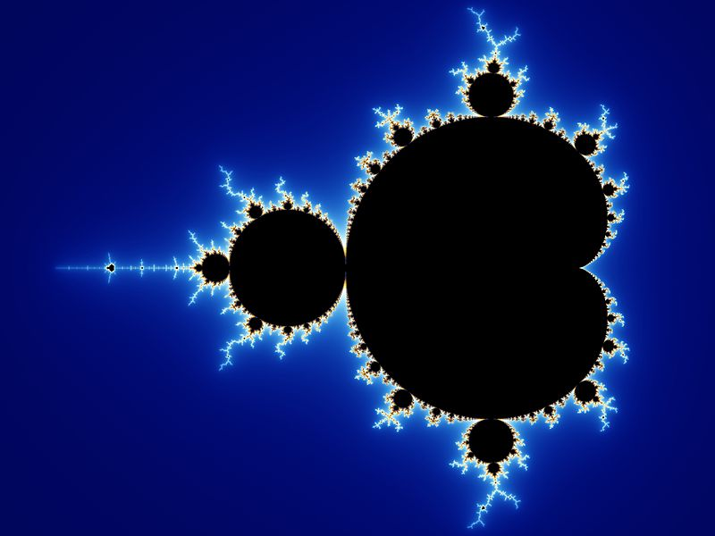

<nav>
    <ul>
        <li><a href="index.html">Accueil</a></li>
        <!-- Début du sous-menu déroulant -->
        <li><a href="">Informations</a>
            <ul>
                <li><a href="profil.html">Profil</a></li>
                <li><a href="contact.html">Contact</a></li>
            </ul>
        </li>
        <!-- Fin du sous-menu déroulant -->
        <li><a href="projets.html">Projets</a>
        </li>
        <li><a href="colaborateurs.html">Collaborateurs</a></li>
    </ul>
</nav>
<style>
    li {
        list-style:none !important; /*On enlève les puces de la liste */
        color:#FFF;
        padding:10px;
        font-size:50px;
        text-decoration:none;
        width: 25%;
    }

    nav ul {
        padding:0;
        margin:0;
    }

    nav ul li {
        list-style: none;
        line-height:30px;
        float:left;
    }

    nav ul li a {
        color:#FFF;
        padding:10px;
        font-size:20px;
        text-decoration:none;
    }

    li a:hover {
        border-bottom:3px #FFF solid;
    }

    nav ul li ul {
        display:none; /* Rend le menu déroulant caché par défaut */
    }

    nav ul li:hover ul { /* Affiche la dropNav au survol de la souris avec la class .drop */
        z-index:99999;
        display:list-item !important;
        position:absolute;
        margin-top:5px;
        margin-left:-10px;
    }

    nav ul li:hover ul li {
        float:none;
    }
</style>

<div>
<a href="https://gitlab.univ-artois.fr/aymeric_jakobowski/marathon-22-groupe-08">
    <br />
    <span>Ce projet représente le site web en php <br>de notre entreprise la toile.</span>
    </a></div>
    <div>
    <a href="https://gitlab.univ-artois.fr/jules_bobeuf/sae-3-groupe-b-2">
    <br>
    <span>Ce projet est un projet saé,<br> il représente des fractales en java.</span>
</a></div>
<br>
<br>
<br>
<div>
    <a href="https://gitlab.univ-artois.fr/jules_bobeuf/projet-2022-2023-b-1">
        <br />
        <span>Ce projet représente le jeu space invaders.</span>
        </a></div>
        <div>
        <a href="">
        <br>
        <span>Cette application est en cours de développement,<br> revenez plus tard pour le résultat.</span>
    </a></div>

<style>
    span {font-size:1.5em; text-align: center; white-space:normal; background:linear-gradient(75deg, #E5E0F9,#C5C7DB,#EAEDF3,#C5D2DB,#E0F6F9); color:transparent; background-clip:text; -webkit-background-clip:text; position:relative;}
    
    img {
        width : 400px;
        height : 400px;
}
div {
  display:inline-block;
  margin-left: 350px;
  margin-top: 20px;
}

* {margin:0; padding:0; font-size:1em; box-sizing:border-box;}
    body {transition:background-color 4s ease; background:linear-gradient(70deg,purple,rgb(77, 0, 128),rgb(7, 147, 228),rgb(77, 0, 128),purple); background-size:auto; background-size:500% 250%; animation:degradeFond 10s ease infinite;}
    @keyframes degradeFond {
      0% {background-position:0 50%;}
      50% {background-position:50% 50%;}
      100% {background-position:0 50%;}
    }
    </style>
